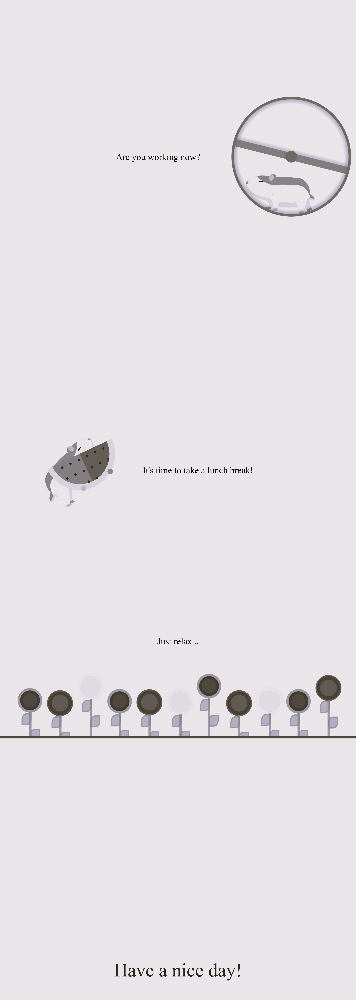

This project is a stylish and vibrant webpage created to lift the spirits and add a little joy to everyday life. All animations and visual effects were designed using only CSS, which made the implementation process simple. Smooth transitions and dynamic elements help create an atmosphere of positivity.
The simplicity of the implementation and the clean code allow you to enjoy the result. This project serves as a great reminder of how small details can greatly enhance the experience of a webpage.

